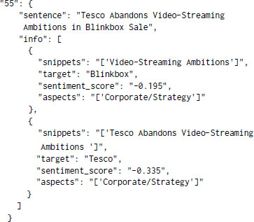

This is a web copy of https://doi.org/10.1145/3184558.3191827. Published in WWW2018 Proceedings © 2018 International World Wide Web Conference Committee, published under Creative Commons CC By 4.0 License. The modifications from the original are solely to improve HTML aiming to make it Findable, Accessible, Interoperable and Reusable. augmenting HTML metadata and avoiding ACM trademark. To reference this HTML version, use:
Permalink: https://w3id.org/oa/10.1145/3184558.3191827
DOI: https://doi.org/10.1145/3184558.3191827
WWW '18: Proceedings of The Web Conference 2018, Lyon, France, April 2018
Aspect based sentiment analysis aims to detect an aspect (i.e. features) in a given text and then perform sentiment analysis of the text with respect to that aspect. This paper aims to give a solution for the FiQA 2018 challenge subtask 11. We perform aspect-based sentiment analysis on the microblogs and headlines of financial domain. We use a multi-channel convolutional neural network for sentiment analysis and a recurrent neural network with bidirectional long short-term memory units to extract aspect from a given headline or microblog. Our proposed model produces a weighted average F1 score of 0.69 for the aspect extraction task and predicts sentiment intensity scores with a mean squared error of 0.112 on 10-fold cross validation. We believe that the developed system has direct applications in the financial domain.
ACM Reference Format:
Hitkul Jangid, Shivangi Singhal, Rajiv Ratn Shah, and Roger Zimmermann. 2018. Aspect-Based Financial Sentiment Analysis using Deep Learning. In WWW '18 Companion: The 2018 Web Conference Companion, April 23–27, 2018 (WWW ’18 Companion), Lyon, France. ACM, New York, NY, USA 6 Pages. https://doi.org/10.1145/3184558.3191827
Micro-blogging today is an extremely widespread communication medium among Internet users. People use such medium to express their opinions on diverse facets of life every day. Such platforms contain a wealth of information that can be extracted and analyzed to solve various issues prevalent these days. A popular method applied by researchers today is to follow the path of sentiment analysis. It is a widely used natural language processing (NLP) technique that has shown rapid growth in recent years. It aims to identify sentiment of a given text. However, sentiment analysis is not always successful in reflecting the whole story. For example “This car looks beautiful, but does not handle very well.” comprises a positive sentiment towards the looks of the car but a negative sentiment towards its handling. This shows that a given sentence can have multiple aspects present in it and a different sentiment towards each of them.
To address such difficulties, Aspect Based Sentiment Analysis (ABSA) was introduced in 2010[13]. It aims to extract aspects from a given piece of text and its associated sentiment. There are several sub-tasks involved with ABSA among which identifying relevant entities and aspects and determining the corresponding sentiment/polarity are the most studied.
The aim of this paper is to present our proposed solution to the sub-task 1 of the FiQA 2018 challenge. We are provided with a dataset that comprises of financial tweets and headlines. For each sentence, we are provided with relevant snippets in that sentence, the associated sentiment score and the aspect of each snippet. The goal of this challenge is to predict the aspects present in a given snippet and its sentiment score. Towards this objective, we design and implement a model that consists of two neural networks, one for the aspect extraction and other for the sentiment score prediction.
Next, we present relevant work to the scope of this paper.
Sentiment analysis is a sub-field of NLP that was introduced to analyse the sentiments of the text corpus. In early days, supervised learning using annotations that tag evaluative content was used to classify text into subjective or objective[15]. Machine learning models like Naïve Bayes classifiers and support vector machines (SVMs) have also shown good performance in sentiment classificat-ion[8]. In recent times, recurrent neural networks (RNN) and convolution neural networks(CNN) has shown state-of-the-art results for sentiment analysis[6][11]. Aspect based sentiment analysis was first proposed in 2010[13] and since then different approaches were introduced by researchers to solve this problem. Rule based approach have shown good results in aspect extraction[10] but eventually deep learning models out performed conventional models in this task too [14].
In this section, we explain the methodology behind our framework. A sentence can have multiple targets. All the targets present in a sentence and snippet related to them are given. Task is to find the aspect present in each snippet and sentiment intensity score of sentence towards each target. Our system has two major parts, an aspect model and a sentiment model. Firstly each snippet is passed into an aspect model which recognizes the aspect present. Each target present in the sentence is used to calculate a enhanced word vector. These enhanced word vectors links sentiment score with targets. Finally, enhanced word vector is passed into the sentiment model to generate sentiment intensity score of a sentence towards the target. Figure 1 represents a high level picture of our proposed framework.
Next, we will explain the various components of our framework.
Recurrent neural networks has shown state-of-the-art performance with sentence classification and aspect extraction task[5]. Its ability to recognize long range patterns in input data makes it a favorable choice for NLP tasks. We use Bidirectional LSTM RNN for aspect extraction as they can analyze input in both forward and backward direction simultaneously.
We represent sentences using word vectors because bag-of-word sentence representation is unable to capture the positional and semantic relationships between words. In order to prevent overfitting of our models, we use pre-trained word embeddings. Our system supports multiple word embeddings like Stanford GloVe[9], Google-News-Word2Vec[7], Godin[4], FastText[1] and Keras1 in-built embedding layer. Choice of word embedding is a hyperparameter. In word vector representation, each sentence is represented as a matrix $\mathbb {R}^{n\times d}$ , where n is number of words in a sentence and d is the dimension of word embedding.
Our RNN takes word vector as an input and outputs a probability distribution over 27 given aspect classes mentioned in Table 1. The one with highest probability value is taken as the output aspect. Moreover, the given problem has only one aspect per snippet but this model can be easily extended for multiple aspects as shown by [14]. For multiple aspects, instead of using class with highest probability as an aspect, every class having probability above a threshold θ is treated as an aspect. Here θ is a hyperparameter. We use Bayesian optimization[12] for finding best combination of hyperparameters. Experiment section includes exact range of hyperparameters used.
Multichannel convolutional neural network has shown state-of-the-art performance for sentiment classification task[6]. However, all the deep learning models classify sentences into discrete classes e.g. positive, negative and neutral but for the challenge, we need to provide a sentiment intensity score in range [ − 1, 1]. Rule based models which uses a predefined intensity score of each word to calculate the sentiment score of entire sentence are proposed[3], but they fail in complex scenarios like a negative sentiment can be communicated using negation of positive words. Deep learning models are good at dealing with complex situation like these.
We use a modified version of model proposed by [6]. In the output layer of our CNN, we have only one neuron with sigmoid activation function. This model is then trained on a dataset of sentences and their sentiment intensity score. Enhanced word vector are given as input and output is the sentiment intensity score between the range [0, 1] which is scaled to [ − 1, 1] before reporting. In this model also, the choice of word embedding is a hyperparameter and each channel can have a different word embedding. Propagation of errors into word vectors is also kept as a hyperparameter. We use Bayesian optimization[12] for finding best combination of hyperparameters. Experiment section includes exact range of hyperparameters used.
Sentiment score is calculated using enhanced word vector of the sentence to establish connection of the sentiment score with its target. We modify the technique proposed by [14] to rescale each word vector according to its relation with the given target. Instead of using constituency tree of the sentence as suggested, we use a dependency tree as they are designed for representing relationship between words in a sentence. Spacy2 and NetworkX3 are used for generating dependency tree. Now, enhanced word vector is calculated by using the given target, original word vectors and dependency tree. Due to the page limit, we do not go into the details of this technique. Interested readers can refer to [14].
In this section, we present our experiments. We give an overview of the training dataset, hyperparameter settings and results of our experiments.
The dataset used for training is available at FiQA 2018 website4. Organizers of the task provided 435 annotated financial headlines and 675 annotated financial tweets as the training dataset. For each tweet/headline, targets and snippet relevant to the target were provided. Each target has sentiment score and an aspect. An example of data block for one sentence is shown below.

The aspect of each snippet can have up to six levels but for this challenge, we are required to report aspects up to level 2 only. Level 1 has 4 unique aspects and level 2 has 27 unique aspects. Names and frequency of each aspect is shown in Table 1. A huge class imbalance is present in the training data that can be observed in Table 1. This makes predicting certain aspects hard.
| Level 1 Aspect training dataset | Level 2 Aspect | Frequency in |
|---|---|---|
| Corporate | Reputation | 10 |
| Company Communication | 8 | |
| Appointment | 37 | |
| Financial | 26 | |
| Regulatory | 18 | |
| Sales | 92 | |
| M&A | 76 | |
| Legal | 28 | |
| Dividend Policy | 26 | |
| Risks | 57 | |
| Rumors | 33 | |
| Strategy | 49 | |
| Stock | Options | 12 |
| IPO | 8 | |
| Signal | 26 | |
| Coverage | 45 | |
| Fundamentals | 13 | |
| Insider Activity | 5 | |
| Price Action | 437 | |
| Buyside | 5 | |
| Technical Analysis | 98 | |
| Economy | Trade | 2 |
| Central Banks | 5 | |
| Market | Currency | 2 |
| Conditions | 3 | |
| Market | 24 | |
| Volatility | 11 |
Sentiment scores are given in range [ − 1, 1]. Here − 1 is extremely negative and 1 is extremely positive. Figure 2 shows frequency distribution of sentiment scores in the training dataset.
We performed standard text pre-processing steps for cleaning snippets such as removal of twitter usernames, stop words, punctuation, website links and # from all the #tags. Each snippet and sentence is padded so that they can match the length of longest snippet and sentence respectively. In result to this, the final length of snippets and sentences are 11 and 19 respectively. Moreover, the provided sentiment score is scaled to [0, 1] from [ − 1, 1] for training sentiment model.
4.3.1 Aspect Model. A bidirectional LSTM RNN is used for aspect extraction. We use Bayesian optimization[12] for finding best combination of hyperparameters. Table 2 shows all the hyperparameters and their exact ranges used.
| Hyperparameter | Range |
|---|---|
| Learning rate | 0.0001 to 0.1 |
| Dropout | 0.1 to 0.5 |
| Number of LSTM units | 400,500,600,700 |
| Word Embedding Google-News-Word2Vec, Keras Embedding layer |
Fast Text, Godin, GloVe |
| Train embedding layer flag | True, False |
| Dimension of free embedding layer | 100,300,400 |
| Batch size | 16,32,64 |
| Epochs | 10,50,70,150 |
After training 60 models with different combination of hyperparameters, model with the highest weighted average F1 score had hyperparameter values as shown in Table 3. We use 10 fold cross validation while training to prevent overfitting on validation set. Figure 3 shows weighted average F1 score of all 60 models,and the best one is marked with a red star.
| Hyperparameter | Value |
|---|---|
| Learning rate | 0.00063 |
| Dropout | 0.5 |
| Number of LSTM units | 400 |
| Word Embedding | Google-News-Word2Vec |
| Train embedding layer flag | False |
| Dimension of free embedding layer | 400 |
| Batch size | 8 |
| Epochs | 100 |
4.3.2 Sentiment Model. Multi-channel CNN is used for sentiment analysis. We use Bayesian optimization[12] for finding best combination of hyperparameters. Table 4 shows all the hyperparameters and their exact ranges used.
| Hyperparameter | Range |
|---|---|
| Learning rate | 0.0001 to 0.1 |
| Dropout | 0.4 to 0.9 |
| Number of neurons in hidden layer | 100,200,300,400 |
| Number of filters | 100,200,300,400 |
| Filter size | [1,2,3,4,5,6] |
| Word Embedding Google-News-Word2Vec |
GloVe, Godin,FastText |
| Train embedding layer flag | True, False |
| Batch size | 8,16,32,64 |
| Epoch | 10,20,30,50 |
After training 250 models with different combination of hyperparameters, model with the least mean squared error had hyperparameter values as shown in Table 5. We use 10 fold cross validation while training to prevent overfitting on validation set. Figure 4 and 5 shows mean squared error and R squared score respectively of all 250 models. The best one is marked with a red star.
| Hyperparameter | Value |
|---|---|
| Learning rate | 0.0099 |
| Dropout | 0.8676 |
| Number of neurons in hidden layer | 400 |
| Number of filters | 100 |
| Filter size Channel 3 = 2 |
Channel 1 = 2, Channel 2 = 3 |
| Word Embedding Channel 2 = Google-News-Word2Vec |
Channel 1 = Godin |
| Train embedding layer flag | False |
| Batch size | 64 |
| Epochs | 50 |
Gold Standard dataset is not released, so we use 10 fold cross validation to evaluate our models. F1 scores are used to evaluate performance of aspect model. Due to the class imbalance present in aspect data, we decide to use weighted average F1 score as a performance measure because it keeps an account for class imbalances while calculating the score. We achieved a weighted average F1 score of 0.69.
For measuring the performance of the sentiment model, we use mean squared error and R squared score. Our best sentiment model has R squared score of 0.288 and predicts sentiment scores with MSE of 0.112.
In this paper, we present a framework of deep learning models to do aspect-based sentiment analysis on financial tweets and headlines. Our model shows promising performance. We propose a novel approach to find sentiment intensity score of a sentence using deep learning model. In future, we aim to train these models on a larger dataset to capture information about the aspect classes that were not studied properly due to unavailability of enough training samples in the current dataset. Ensemble of deep learning models has shown state-of-the-art performance in recent times[2] and we would like to study the effects of ensemble on our models too. We also aim to evaluate the performance of these models on data of other domains.
1https://sites.google.com/view/fiqa/home
1https://keras.io/layers/embeddings/
4https://sites.google.com/view/fiqa/home
This paper is published under the Creative Commons Attribution 4.0 International (CC-BY 4.0) license. Authors reserve their rights to disseminate the work on their personal and corporate Web sites with the appropriate attribution.
WWW '18, Companion, April 23–27, 2018, Lyon, France
© 2018; IW3C2 (International World Wide Web Conference Committee), published under Creative Commons CC-BY 4.0 License. ACM ISBN 978-1-4503-5640-4/18/04.
DOI: https://doi.org/10.1145/3184558.3191827